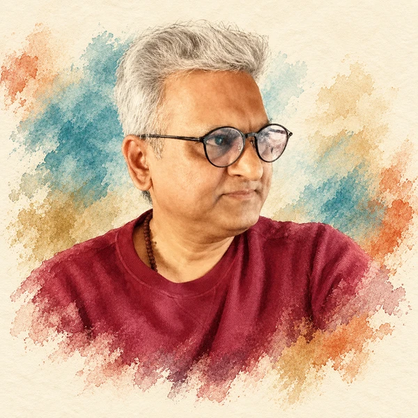
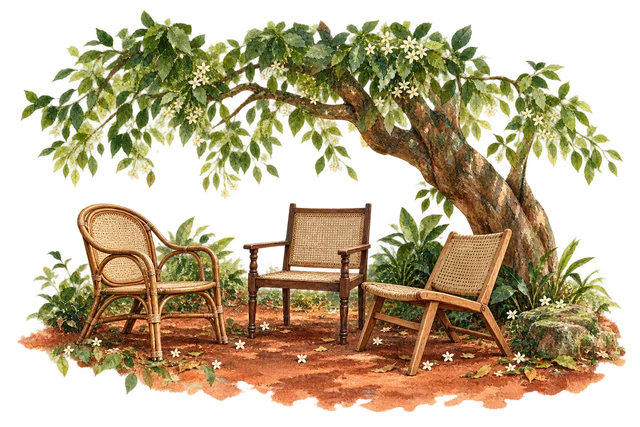
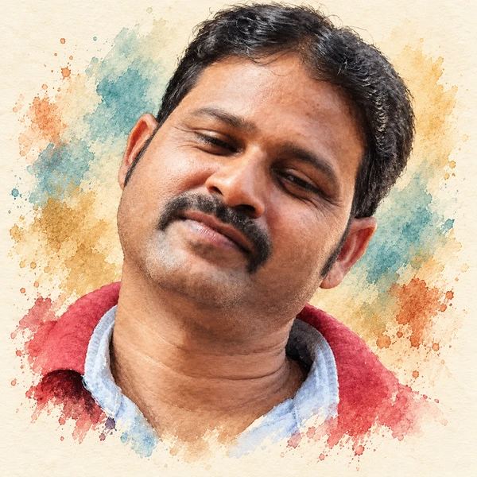
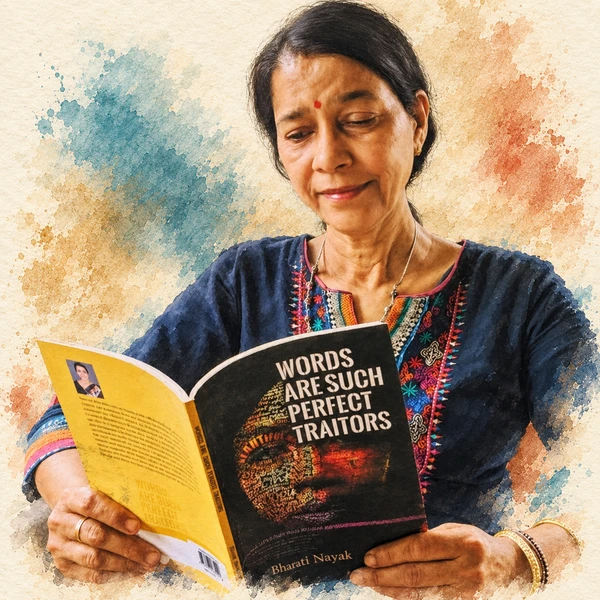
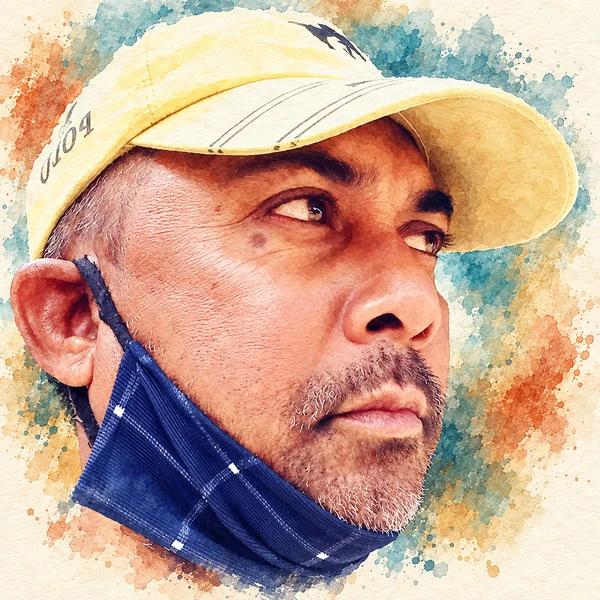
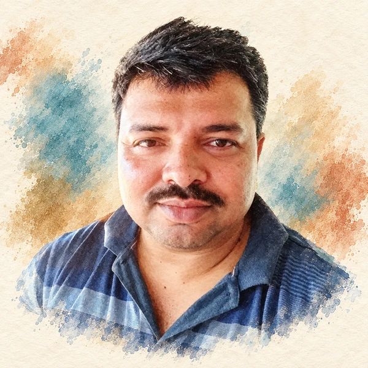
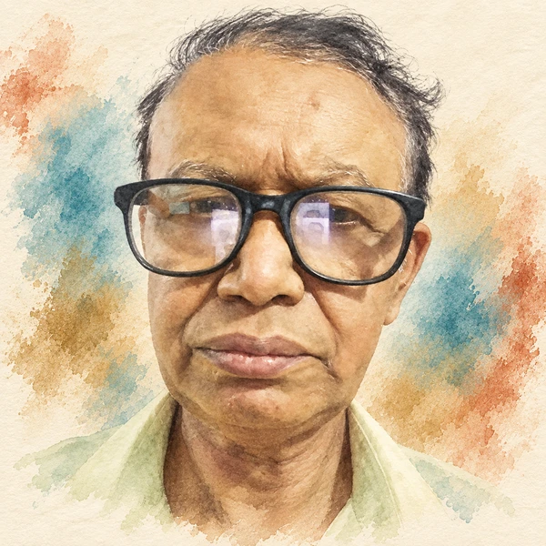
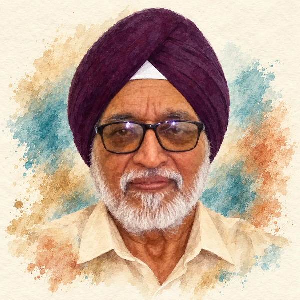
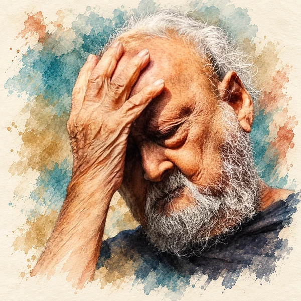
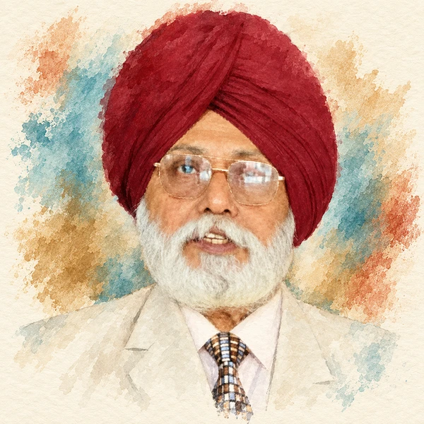

Aakash Nayak
In the mouth of an ant
Clusters of stars emerge.Behind every poem, a voice. Find one that stays with you.


In the mouth of an ant
Clusters of stars emerge.Stinking With The No Fragrance
Assuming A Sinister Voidnessଭୋକ ହଉଛି?
ଭୀଷଣ ଭୋକLike this waterfall my dream will keep flowing in my veins,
I won`t stop until the day comes that I achieve my dream.I know I can only tell you
My caretaker in lifeI stare about,
Through my rimy window,Seductive clouds draw near
Dark wings unfold, whispers clearI won`t fall, Sir!
I heard a voice, confident.Sometimes, it means I write.
Sometimes, it means I think.ତତେ ହୁଏତ ଜଣାନାହିଁ ସେ କାରଣ,
ତୁ ତ ଦେଖି ପାରୁନାBrahmin, Kshatriya and Dalit each as rotational head
No one shall be repeated and no dynasty be followedଯେଉଁ ମଉନ ଆଶାକୁ ନେଇ
ଲଟୁ ପରିକା ଘୂରି ବୁଲିଲି,Love is a wonderful feeling,
Where the heart keeps reeling,तो छिन्नमस्तिका भी तुझको
निज शील के हित बनना होगा।Drawing the line of partition while the river was flowing
Water bubbles burst with laughter.As I look back,
I see the years went byI decide to write
a poem about the poemI shelter my words in sundown scriptଆଃ, ଜୀବନ ଆଉ କ`ଣ କି ?
ଅଧା ଖରା ଅଧା ଛାଇRain does not descend
as naturally as it used toYou can feel it,
settling in your chest,I see your deer eyes
quest for the ashesI`m blindfolded now.
And happy.ଆହା !! ଅପୂର୍ବ ସେ ମୁହାଣ ମିଳନ ସ୍ଥଳ!
ସମର୍ପଣ, ଆମନ୍ତ୍ରଣI will walk forward, since life will not
allow me to look back...The future will sprout from the
barren sand.नाच बेबाक़, मनचली हवा सी बन दबंग
ले चल सारा हुज़ूम साथ अपने तूଗୋଟିଏ ଗୁମୁସୁମ ନୀରବତା
କହିବାକୁ ଗଲେ ସେ ନୀରବତା ହିଁନହାରିଲେ ବାଙ୍କ ପଡେନି ନଈରେ
ବାଙ୍କ ନପଡି କେହି ନଈ ହୁଏନି!?...A blank page, blank but full of space
Full of space with full of blissA Circle to Me is a Cycle of LifeI write because silence gnaws the walls.
The words come like insects—Torrential rain enlightens me about
the bygone of care. Bareness, punctuatedThe friendless road taken: my only identity, means and me.Intimacy is listening with eyes,
Talking with hands,କେବେ କେବେ କେଉଁ ଅଲୋଡ଼ା ସ୍ବପ୍ନ ଭିତରେ
ଓହ୍ଲେଇ ପଡ଼ନ୍ତି ଏଇ କେତୋଟି ଉଜ୍ଜ୍ବଳ ନକ୍ଷତ୍ର।स्त्री एक खूबसूरत मन है
केवल काया नहींBehold the rainbow
As the blessing of the skyJust melt like an ice disappear like a drop
Just be of someone and experience pure loveAs I put the kettle on the stove,
Unexpectedly, spring bloomed.ସୀମା ଅଛି ବୋଲି ସିନା
ମୋ ପାଇଁ ସୂର୍ଯ୍ୟର ଆଲୁଅ ସୀମିତ,आपकी मुस्कान आपके
अंतर्मन को दर्शाता हैSuch is reality,
the beauty of illusion.It can come in an unruly air
Uncontrolled rain, tearଜାଣିଜାଣି ତମେ ମତେ
ଦେଉଥିବ ଦୁଃଖNestled on branches hanging low
Heavy with the load they carryସ୍ତ୍ରୀଲୋକ ବର୍ଷା ରେ ଭିଜୁଥାଏ ଚିରକାଳ
ଭିଜଉ ଥାଏ ସଭିଙ୍କୁ ।।
ଏଇ ଅପୂରଣୀୟ ଶୂନ୍ୟସ୍ଥାନମାନେ ହିଁ
ମୋତେ ପାଶ୍ କରେଇ ଦିଅନ୍ତି ଅନାୟାସରେLet me live like a Prince
And die like a phoenixଉଷ୍ମୁଳିଆ` ଅଶିଣ` ଆକାଶର
ପିଠି ସାରା` ଲେସିଦିଅ !Some said he lost his dreams
And transmuted into a moth to the flame.Dreams in the eyes are like flowers;ଡାକ୍ତର ଆସିଲେ ତାଙ୍କୁ ଦେଖି ହସୁଥିଲେ ।
ଯେମିତି ଦୁର୍ବଳ ପ୍ରତିଦ୍ୱନ୍ଦୀକୁ ଦେଖିSoon after his departure
Grandma crushed her glass banglesସୁନ୍ଦରୀ ଷୋଡ଼ଶୀ ବିଦେଶୀନୀ
ନୂଆ ଆକାଶରେLike the fallen leaves of maple
Rustling on the soil to hymn harmony,You have designed my fate
to scare away birds,People have dug into the heart of the earth,
Searching for gold, diamond, coal, and petrol,
My life sails
Pass by, the days, months and yearsLife is not a bed of roses; let them so say
Love winnows all the thorns from our stay.ମୁଁ ତତେ ଶିଖେଇ ଦେବି
ହୃଦୟ ଜିଣିବାର କଳାI know how they have been acting out
some role from an ancient time—ଜୀବନ ଜୀବନରେ ଏ ଜୀବନ
ଦେ` ରେ ମୋ` ନିଃଶ୍ୱାସରେ ମୁଠେ ନିର୍ମଳ ପବନ ।The dry petals aptly slip down and scatter
Nudge to floor.ଆଲୋକ ଓ ପବନ କେମିତି ନିର୍ଭୟରେ
ଅନ୍ଧାର କେମିତି ଜଡସଡ ହେଇSilently tip toeing to kiss and garnish the dreams of age old eyes.
At the threshold of exit life beckons life.Why have You disowned me?
Am I not worthy of Your love?ଦୁନିଆର ଯେତେକ ନାମ ଜଣା ଅଜଣା ଚଢେଇ
ଭିଡ଼ କଲେ ତାଂକ ହାତରୁ ଆହାରସବୁ ସାଇତି ଦେଇଛି ତମପାଇଁ
ଆସ, ଶବ୍ଦ ମାଗନାହିଁ !You turned to be a love now.
You have given me big canvas.ମୋ ଚୌହଦୀରେ
ପୂଜରକ୍ତ ସାଲୁବାଲୁ ମୁମୁର୍ଷୁ ପୃଥିବୀहवा बसंत की
सुलगाती है,ଏଇଥିପାଇଁତ
ପଶାପାଲିରେ ହରେଇ ଦେଲିThe wealth of worth is aesthetic order,
intellectual health and spiritual growthAnd it allows no external judge to dictate one`s life paths anymore.Searching a trisul
The girl has been waiting devotedlyThe woods and living animals, wonderful creatures on
this vivid earth need nothing butThe flowers must be in bloom somewhere,
she thinks-Killed like mosquitoes. Countless times, she murmurs
the names of every single lost soul.ଆମ ସାନ ସହରଟିର ନାମ
ବାରମ୍ବାର ଲେଖା ହେଉଚି ଟିଭି ପରଦାରେସେମାନଙ୍କୁ ଖୋଜିବାକୁ ପଡେ
ଅତଡ଼ା ଧସିବ ପରବର୍ତୀ ଅନ୍ଧାରରୁthe weight
of a raindropହଁ; ..ବର୍ତ୍ତମାନ କବିତା ବେଲଗାମ୍ ହୁସ୍ନ ୱା ଲା ଙ୍କ ମେହେଫିଲ ରେ ।କାଲି କେହି ଜଦି ଏ କବିତା ପଢେ
କହିବ ପାରେ, `ଏ ତ ଗୋଟେ ପଗେଳିର ପ୍ରେମ କବିତା`I will try to sleep again.
For my dreams are a safer place.
ଯେମିତି ମୁଁ ବି କାନ୍ଦି ଦିଏ କେବେକେବେ
କାହାର ଉପକାର ପାଇ, ଭୋ-ଭୋ ହୋଇ।ପଞ୍ଜୁରୀର ବନ୍ଦୀ ଜୀବନରୁ ଉଡିଯାଇଥିବା ପକ୍ଷୀ ସେ,
ଆବଶ୍ୟକ କାହିଁ ତା`ର ଦିଗବାରିଣୀ ?Tearful eyes
cloudy skyIn the hush between heartbeats, where breath becomes memory,
Love`s lingering shadows drift like smoke..
विचारों की उड़ान हमेशा चलती रहे, मन की गहराईयों में बहती रहे। आकाश की सीमाएँ पार करती रहे, सोच की बांहों में भरी रहे।ख़ून से लहुलुहान तेरी धरती
किस की हैं ये ग़लतियाँ?
A black veil frequently engulfs us
aeon after aeon, as pods are captiveThe Sky
hesitates toDon`t set the rules for me
I`m afraid I can`t give you my wordIf you were a person
What would you doहर वो सपने जो टूट के बिखरने लगे हों
तो एक नया ख़्वाब जन्म लेगाIn a moment, with a jerk,
I turn away.Relishing her discovery of words,
I want the joy of being a child again.Rope-serpent hallucination
engenders turmoil;ମୋର ଦୋଷ କଣ ମା`
ଯଦିPut back your beautiful wings
This world needs you to heal!!!!Trust me i`ve aligned me well
Am busy mending injured emotionsThe singing of the cuckoo
The rains and the rainbow,the inseparable twoI lie awake in my mother`s womb,
Worried for my safety and hers.प्यार से गुफ्तुगू कोई करता नहीं
दौरे माज़ी का वो हमनवा चाहियेAs if they decipher the silence in my numb eyes
And I listen to the unsaid words they try to speakThe ocean melts inside the mirror,
The red fish backstrokes in the sea.I bled for beauty, gave my bones to light,
only to find myself lost,And conversations are now silent moments of our hands feeling each others` pulse.. Till time stops in another dimension..Each time I tried to rise and take my flight,
They reached and dragged me swiftly to the ground.Is it really an illusion
This life, the moments that I spendThe flowers
pour their honeyThe early sun probes the solitary leaf with a kissତୁମେ ଆକାଶର ତାରାର ଦିହୁଡ଼ି
ଚନ୍ଦ୍ରର ଚିତ୍ରଲେଖାଏଇ ସ୍ମିତହସ ନୁହେଁତ
ହଜେଇଦେଇଥିବା ଜୀବନର ବିଡଂବନା !We, who pen dreams with words on paper,
Turn romantic and let our quills dance a caper.बिन दहशत के भरा करती बेटियाँ उड़ान
पहनने ओढ़ने से न रखती सरोकार
fingers unsteady yet tracing the photos
emotions flicker on the wrinkled cheeksHappily you will go home after all the playing and running
If your Uniform is Stain- free at the time of Homecoming.There is a sorrow in me that grows,
swells like the belly of a pregnant woman.Life is flowering to the fullest
Life is captivating to the coreShall stop as the window is not opened.ଭାରି ନିଷ୍ଠୁର ଦିଶେ ସେମାନଙ୍କୁ
ଧଳା ଧୋତି ଫିଙ୍ଗୁଥିବା ସେ ହାତAfar, flowers bloom
in a field of wounds.We, you and I
Float on the fluff of a cloudThese girls were born without a tongue
But some words remain, like coalsWe named her Starina, after a favorite
movie character.Silence, I desire to listen to your words of love,
Not to leave, to extend these hours, never to stop.
Looks as if with all its silvery light,
the world cannot touch meଏବେ ମୁଁ ଖୁବ ଏକା
ନିଦ୍ରାହୀନ ରାତିର ଯଂତ୍ରଣାଯେଉଁ କ୍ଷୀଣତମ ଶବ୍ଦଟି
ଆନମନା କରିଦିଏ ବାରମ୍ବାରBy riding the Himalayas, living with sinful stars
I became a different person.
History is the warbling noise
Of the river of lifeଆକାଶ ଓ ମାଟି ପରସ୍ପରଠୁ
ଅଧିକ ଦୂରେଇ ଗଲେଣି ଆଜିକାଲିଆମେ ଭୁଲିଯାଇଛୁ କ୍ରମଶଃ ଯେ,
ନଈର ଜୀବନ ଅଛି, ଜୀବନ ବି ନଈ।It doesn`t matter though,
You,It`s raining memories and
twenty four is written all over my arms.ଏଇ ଯେଉଁ ସମାଜ
ପ୍ରେମକୁ ପାପ ବୋଲି କହୁଛନ୍ତିମାଟି ହିଁ ବହୁତ କିଛି ଶିଖାଏ
ଚେରେଇବାର ସୂତ୍ରI discern the solitude of life
My senses mingle in the vibranceସେ ଦିଜଣ
ବେଶି ସମୟ ନେବେ ନାହିଁमैं गीत बेचकर घर आया
सुख साधन सारा भर आयाEven if I hesitate and quiver,
My fear means nothing—I love Heaven more.No meaning in his greetings;
empty words like din of a drum.Dukhiram`s shrill voice asking for a cup of tea
breaks the silence of the morning calm...प्रेम पाना आसान नहीं
कसौटी इतनी मुश्क़िल भी नहीं...Selling leftover care, death earns life,
stray love licks careless dreams,spilt;The bluish splendour of your eyes
Gives a rare feelingନଈ ଡାକେ ଘନ....
ନାଆ କୁହାଟେ ଘନOn the either side of my path
Time spreads like a blue sky overhead,आज हैं यहाँ,शायद कल नहीं होंगे।
जगमगाते हुए नए चेहरे सजे होंगे।अभी भी वक्त है गलतियों को सुधार लो तुम!
माँ-बाप के पैर छूकर पाप को पुण्य कर लो तुम!ମୋତେ ମଣିଷ କରିଥିଲା ତୋର ଇଶାରା
ତୋର ଇଙ୍ଗିତରେ ଜୀବନ ମୋରCould you tell me where
anguish stays ensconced exactly?Mundane thoughts flow with the profound...
endless summers of flowers and hurricanes of destinies.ପଛରେ ଛାଡି ଆସିଲି କେତେ କେତେ ପଙ୍କିଳ ପ୍ରାଚୀନତାକୁ,
ଛାଡି ଆସିଲି ସେଇ ଛାଇମାନଙ୍କୁମୋ ଆନ୍ଚୁଡା ଗାଲ
ଏ ସବୁ ପାଦ ଚିହ୍ନ ମୋ ଜୀବନରMany a dreams seem to have been buried
In the toil for fulfilling basic need.The remains are a cooled off, lifeless cosmic spider web,
what for a moment, the charlatanଥରୁଟେ ହାତ ଟେକିଦେଲେ
ଏ ବିଶ୍ୱ ଭୋଗନ୍ତାନି ଜୀବନହୀନSo I wait, and hope, and pray,
That he`ll come back, some day,ସମୟର କାନ୍ଥରେ ଫିକାରଙ୍ଗ
ଗୋଟେ ଗୋଟେ ଋତୁକିଏ ପୁଣି କହେ.......
ଖୁବ୍ ହାଲୁକା, ଖୁବ୍ ସାଧାରଣYou smiled at me
Warm , kind & full of loveOld memories masquerade, dream-like.
They write themselvesComfort myself with three letter word
I am born different.I soak my heart in brine,
In all that sunshine.They are horrified to witness the dark, unmasking itself,
Shedding the blood of terror, the suspensive silence dwells.The sun is shining brightly today, things exist.Dreaming of being the entrepreneur of the year
She gulps a glass of water and carries on...Words cannot enter this forbidden land
so, silence blows with the windGrow naturally with experiences
To relish the infinite joy around me .ଆମ କାହାଣୀର ଶେଷ ଦୃଶ୍ୟ ଏବେ
ନୀରବରୁ ନୀରବAnd when the final evening falls, and earthly songs grow faint
and few, Love will remain—a timeless light, forever finding itsएक पल में, मेरे मन को शबनम ने और,
साथ ज्योति ने मिलकर छुआ था कभी।The poems I wrote with pieces of you
Do they still echo in your heartAll I can hear is stillness,
rubbing itself against my pale body.Meet this writer in their profile.
I begin and end with madness,
and like Poppy seeds fall asleep, deep-I drink life
draught by draughtLet poems be simple, not like leafless tree
Let poems be river, not stagnant water body.Still,we wait for a handful of scattered drops of happiness!
And the wait goes on and on and on…!ଏ ବଣକୁ ଆହୁରି ବାଘ ଦର୍କାର , ବାଘ
ବାଘ ଏକା ରହେ , ଏକାକୀ ଶିକାର କରେMeet this writer in their profile.
Thank You Almighty
For Making Me A GirlEmerging victorious,
It perpetually rules the city-of-light,न जाने कौन आस्तीं का सांप हो जाए
समय ये आज का इसका पता नहीं देता।ଏମିତି ନୁହଁ ଯେ
ଦ୍ରୋହ ଆଚରିବା ଆଗରୁ ମୁଁNone cares to think
Of the felled oaksମୁଁ ହସିଲି
ଉତ୍ତର ଦେଲି : ଅଂଧାରରେ ହୁଏତTill one day it disappears - and only lingers in a memory -
and then that goes away too.କବିତା ର ଗଳିକନ୍ଦିରୁ
ଖୁନ୍ଦା ବସ୍ତାରେ ଆଉ କେତେ ଖୁନ୍ଦି ହେବକେବେ ପ୍ରେମିକାର ପାଦ ଖୋଦେଇ ହେଇଛୁ ?
କେବେ ଅନ୍ଧାରର ଦେହେଲି ପାର କରୁ କରୁ ଧରା ପଡିଛୁ?Meet this writer in their profile.
न जाने किस दौर से गुज़र रहा है जहाँ
देखो जिस तरफ़ भी, बिखराव यहाँ वहाँ।When the thorny edges
pierce in to my heartଅଟ୍ଟାଳିକା ହୁଏ ଯେତେ ଉଚ୍ଚତର
ସେଡିକି ଗଭୀର ତା ଭିତ୍ତିପ୍ରସ୍ତରତୁମ ଆଙ୍ଗୁଠିମାନ
ଛୁଇଁ ଚାଲିଥାଆନ୍ତିକାହିଁକି ତୁ ଥରୁଟିଏ ଭଲପାଇଲୁ ଗୋ
କେଉଁ ପ୍ରତାରକ ଭାସ୍କରର ନିହଣରେAnd so, every spring,
she writes to the sky,Molten hell seethes within me
Still, it failsYou make everyday count;
Every moment without discountAll the while I wonder
who this self might be,The sun bid adieu
The Elysian in its gerua attireOnce it slips through your fingers,
You find remorse in your palm-जीवन जंग नहीं, काँटों से
फूलों का भी यहाँ बसेरा है,I didn`t come here,
seeking for anything,To be free is to speak without fear
To live without disguiseସ୍ପଟିକ ପରି ସ୍ଵଛ ହୃଦୟଟିଏ
ଖୋଜୁ ଖୋଜୁ ଧୂଳିଧୂସରିତHe heard my very first words;
I listened to his very last words.ଏବଂ ପରସ୍ପର ମଧ୍ୟରେ ତଥାପି ଜାରି ରହିଥିଲା
ନିରବତାର ବାର୍ତ୍ତାଳାପ।ସିନ୍ଥିରେ ସିନ୍ଦୂର, ହାତରେ ଚୂଡି ପିନ୍ଧି
ସେ ଅପେକ୍ଷା କରିଥିଲା ଚିହ୍ନା ପଦଶବ୍ଦକୁ,Not as dreams ephemeral in nature
But in deedsWho will go away from our life
But the past daysThe curious onlookers came in hordes,
and wanted to know whose body it was.Between the countless and cipher,
There lie many lives, many deaths.ନିଆଁ କହିଲେ ଜ୍ୱଳନ ବୋଲି ବୁଝୁ ବୁଝୁ
କାଗଜ ପରି ଜଳି ସାରିଥାଏ ହୃଦୟ ବୋଲିConvincingly seemed,
An easy possibility to reply,So, when the cannons break the sky again,
May we answer softly-Hazy and misty,
Today is what I have,Nandini`s conjecture--love churned me, this love was my `manthan`.
Love took me out of the darkness of coalfields, like a granite.Light years halt in mere instances, and the moments float as light as dandelions.ଘରଚଟିଆଙ୍କୁ ପଞ୍ଜୁରୀରେ ରଖି
ଶାଗୁଣାମାନେହେଲେ ତୁମେମାନେ ଚାହିଁଲେ
ଏ ପୃଥିବୀକୁ ନୂଆ ରୂପରେ ଦେଖି ପାରିବThe definition of happiness
Keeps changing with timeदेख संतान का मुख माता
ममता से भर जाती हैYou mislead and stray and stray
You set fires upon firesबोरी भरकर ले आई मैं ,
सपने बचपन की पलकों से,दुर्मर्ष दर्द के मंजर देखे।
पीठ पे चलते खंजर देखे।Every night they come rushing
Surround me andସକାଳ ସୂର୍ଯ୍ୟର କଅଁଳ କିରଣରେ
ଆଙ୍କିଦିଏ ଚୁମାଟିଏଜୀବନ ବୋଇଲେ ବାକି ସବୁଛନ୍ଦ ର ମୋହ ଛଡେଇ
ଚାଲ ଖୋଜିଚାଲିବା ନିଜ ଛନ୍ଦଟିକୁ ।Month of Ramadan
Afruza sent some dates for meI enfold this canvas once again.
But can love ever be confined ?The sky was clear and blue
In that the Sun swam with its radiant glue !Sunsets on the shores of our hearts
Raindrops on the lines of our palmsMy yesterdays lay
soaked in cheap perfumeThose perspiration which had been heartily desire!
Am I eligible to make my soul desire?Autumn would follow spring
She and many others would travel through umpteen life`s swings!Let all of us come to crave the dream
Life needs compassion as sun beam.नए रंगो में भरते हुए
फिर से तुममें अपनी कहानीତମ ମନ ସୁଶୀତଳ ଶାନ୍ତ ସ୍ନିଗ୍ଧ ନଈଟିଏ
ନିଜକୁ ଭସାଇ ଦିଏ,ହାତ ଟେକି ପହଁରି ଜାଣେନାHearts mix and match well
Like colours in rainbow lightThe secret lies in the art of living;
To embrace the fullness of lifeI am simply numb in my speech
Singing your glory as ever.She searches herself in him,
he in her, only the two can join.Turn around, embrace;the glory and beauty of life!;
The train leaves but come again to SerdicaWhere is he, where is the lovelorn crane?
Is he alive or has he at last met his beloved?One should climb the historical hill
With tremendous joy and a strong willMeet this writer in their profile.
The way to erase fear is to rinse.ଅଭିସାରିକାର ବେଶଭୂଷା ତମକୁ ଶୋଭା ପାଏନି
ଶୋଭା ପାଏନି ...ମୋନା...ଆଉ ପୁଣି ମୁକ୍ତାକାଶେ ଉଡି ବାର ସହସ୍ର ରୋମାଞ୍ଚ
ଦେହେ ତୁମ ଭରି ଦେଇ ଆଶାତୀତ ଶକତି ର ଉତ୍ସपर वह साबुनदानी
मेरी पुरानी स्थिर सोच की तरह,This body bends down , the warmth of the body lessens
The different stories of lifeMira collected her memory and folded
them back to her heart to carry themI wake up from
the silent noiseRelive those past memories,
And head towards my abode,A Poet has no land
No bordersCharacter`s destiny, and man himself is the maker
The fault`s in him only, if he turns out to be a loser.The world was green, the world is blue,
Time arrived but swiftly flew,Beehives and ants creates poetry
Not the gigantic trees,skyscraper buildingsରାତି
ଶୁଣଉଥାଉକୋଉଟା ଜୀବନ ପାଇଁ ଭାରି ଦରକାର
ଚୋରା ଚାଇତାଳି ନା ଚାଷ ଜମି ମାଟି ସମତୁଲ?ପଞ୍ଚମ ଦିନ କିଛି ଦୁର୍ବୃତ ଘୋଷଣା କଲେ ମୁଁ ପ୍ରେମରେ ।କାହା ନାଆଁରେ
ଗୋପଦାଣ୍ଡରେ ଡିବିଡିବି ନାଗରା ବାଜୁଥାଏ ?...ବିଶ୍ଵବ୍ରହ୍ମାଂଡ ନୁହେଁ
କିThe cicadas fill the afternoon with their monotonous shrill,
The sun adorns the sky like a pendant of gold.Complete oblivion,
or do wisps of memory lurkWhere did those days go?
TIME - flew like a riverLovebirds defy
The beasts of nightsबारिश तुम्हें बेहद पसंद है, मान लिया।
क्या कभी सोचा है,A lie has a life of its own
It slides out like a slip of larvaeଗୋଟିଏ ମାତ୍ର କବିତା
ଲେଖିବାକୁ ଅଛି ମୋର;କବି ତୁମେ,କରିପାର ବର୍ଷା
ବିନା ସେଇ ଆଷାଢ ମେଘରେଯେଉଁ ସ୍ୱପ୍ନ ଟିକକ
ସେ ଆଖିରେ ବୋଳିଦେଇ ଯାଏmuch of you was poetry regained in me,
and much of the care about the world lost.I convert the dreams of the past
to a swing again and rock them.this crack
on the wallEmbrace solitude in grace to invite the divine
Choose to believe that solitude is a blessing in disguise.Every living being is no doubt born free
But every where in chainsSo many oceans you are!
It is an ocean in your eyesLucid words cloud
Prisms of versed contradictionInvolved, by holding each-other`s hands,
In the unbreakable bonds of love.ସମୁଦାୟ ତଫ ପଡ଼ା ପାଞ୍ଚଟି
ସବୁତିକ ତୁମକୁ ଦେଇଦେଲେଆଗରୁ ମୋ ଖଟରେ ଶୋଇଲେ
ମୋତେ ଆକାଶ ଦେଖୁଥିଲାସତେ କଣ ମୋର ବଂଚିବାର ଥିଲା
ଆୟୂଷ ବାହାରେ ଅନ୍ୟ ଏକtadpoles jiggle
remember the day weUnder the canopy of clouds
Cuddled by warm winds,With the slanting rays of the evening
My being settles like a birdIn oscillation of trust
Dreams bloomପ୍ଲେନ କ୍ରାସ୍ ହେଲା, ଟ୍ରାକ୍ ରୁ ହଟିଗଲା ଟ୍ରେନ..
ଅଜସ୍ର ଜୀବନହାନି ହେବାର ମର୍ମନ୍ତୁଦ ଖବର ପ୍ରସାରଣ ପରେHome and hearth, birds, and cattle
bricks and mortar hear my call.Not from hope.
Hope would require instruction.ରକ୍ତ ଜୁଡୁବୁଡୁ ମାଟିର କାକୁସ୍ଥ ଚିତ୍କାରରେ
ଚଣ୍ଡାଶୋକ ପାଲଟି ଯାଏ ଧର୍ମାଶୋକThe moon showed off its full splendour,
In that light I could perfectly spot her.As the briny winds embrace me
I can feel your tender loveYou surround me, are all around me
All majestic, exalted and sublimeरख लिया विक्षोभ बहुत,
अब समर्पण भाव रखूंगी।Poetry is my first and foremost love
The heart beat which will never stopThe day ends flickering at my fingertips,
I sew the gold-dust to my eyelids,I have seen dreams being fulfilled in huts,
I have seen dreams being buried in palaces.Present is gifted present from life
Present is gifted present to life.ବାକି ଖାତାରେ ପଡି଼ଥିବା
ତା` ଆତ୍ମସମ୍ମାନ ସେଦିନ ତା` ଅଧିକାର ମାଗେ II had only one
Answer for themA gust of hope it is,
Sweeps away the mist of despair every time.I felt no fear that day
As I walked deep into the seaAbandoned by big cruel world cold
bewildered orphans of wars unfoldहृदय के भीतर
न जाने कितने ब्रह्मांड बसते हैं।ଯେଉଁଠି ମଞ୍ଜି ବୁଣିଲେ
ଫଳୁଥିଲା ସୁନାକେଉଁ ଚିଠିର ମୋହ
ଆବୋରି ରଖିଛି ମତେWith the gentle murmurs of the Ganga
Kashi sleeps dreaming.ମାତ୍ର ଦୁଇ ଟୋପା ଲୁହର ଧାର,
କେତେ ଶୀତଳତା ସେଥିରେ??Here I move
begging for your loveLast night it’s shadows waltzed,
To the serenade played exclusively for me.କୁହ, ଉପେକ୍ଷାର ସେ ରଡ଼ନିଆଁରେ କେବେ ଜଳିଚ?ଦେଖ!ଟିକେ ନିରିଖେଇ ଦେଖ
ତୋ ଦେହର ନଈକୂଳେ ପ୍ରେମ ପ୍ରେମ ଦିଶୁଥିବାକବିତାକୁ ଭୋଗେ ସିଏ କବିତାକୁ ଭାବେ
କବିତା ଲେଖୁଥିବା ଝିଅ ଠିକ୍ ତା ପରି ବଞ୍ଚେ।ବାପା କୁହନ୍ତି ତୁମଠି ଅଗାଧ ଜ୍ଞାନ
ଅଥଚ ମୁଁ ଭାବେ କେମିତିକା କେଜାଣିକିଚିରି ମିଚିରି ହେଇ
ଉଡୁଥାଏ ଯେତିକିThe earth the sky and the water base
Will breathe in peaceThe ship sails on.
Life is an exploration.Useless all without you
Earth, Heaven and Life ,An unknown vastness of dignity
Where sparkling starsHas a whimsical painter gone haywire, painting harum-scarum?
humming some grotesque tune, sitting on the pavement, crooning?People lie and waste away,
As if they never had been!What is simple,
is lifeA happier world came into view.
When I fell in love with you.ତ୍ରିରଙ୍ଗା ଉଡ଼ାଇ, କରତାଳି ଦେଇ,ଜନଗଣମନ ଗାଇ,
ପ୍ରମାଣିତ କରିସାରିଥିଲି ମୋର ଦେଶପ୍ରେମ।A mother`s eyes
Wait longinglyତେବେ ବି କେତେ ନିଷ୍ଠୁର ଜଣେ ହୋଇପାରେ!ଜାଣି ହୁଏନି, କେତେବେଳେ
ଉଲ୍କାକାପାତରେ ଜଳିଯାଇଛିLittle dazzling waves appear
Embrace the shoreBut when I came out of their sadness and delight
To live and love my own pain, I learnt how to write.ନ ଥିବାର ଦିନସବୁ
କେତେ ନଗ୍ନ, ନୀରବसोचती ईश्वर सुन रहे हैं मेरे मन की बात
अब संसार सुखमय हो जायेगाAn active, adorable and accountable,
What not, she`s an epitome of being humble;Let them cast spells
Let`s run away from themସଭିଙ୍କୁ ସଂଖୋଳିବା ମାନେ ତ ସଂସାର
ସବୁରି ମୁହଁରେ ହସ ଫୁଟେଇ ପାରିଲେ ତତୁ ଭାଙ୍ଗିଦେଇ ପାରିବୁ, ଯାହା ଦୂରେଇ ଦିଏ
ହୃଦୟରୁ ହୃଦୟକୁ !?ଏତେ ତା`ର ଉତ୍କଣ୍ଠା ଓ ଆଗ୍ରହ
ବର୍ତ୍ତମାନ ଠାରୁ ଅତୀତକୁ ଫେରି ଯିବାରଆପଣ ବି ମୋ ଚଉଦ ପୁରୁଷର
ପୂର୍ବପୁରୁଷ, ମୁଁ ପୂର୍ବାପର ଭଗ୍ନାବଶେଷFreshly cemented walls
Grey like a promising sky forThere are other kind of cities too-
where midnight crosses sand dunesଏମିତି ଚୁପ୍ ହୋଇଗଲା ଯେ
ତାର ଅନୁପସ୍ଥିତିରୁ ବି ଆଉScar in flesh, bruised inside skin conciliate
Wounded by heart can’t reconcillateThey are all magnificent creatures in their own unique way
Created by the Master of the Universe!ଟ୍ରେନ ଛାଡ଼ିଦେଲା ପରେ କାହାର କେଜାଣି
ସେଇସବୁ ଲୁହ ମନେ ପଡେବସନ୍ତିଆ ଖରାର ଲାଲ୍ ଆଖି ଦେଖି ଫେରି ଆସିଛି
ମୋ ସହର କୋଳକୁ,I am taught
life is beyond desiresସ୍ନେହ ଆଉ ସରାଗର
ଗଙ୍ଗା ପାଣି ଛିଞ୍ଚି ସଫାକଲି ମନକୁRunnels of rain shyly slither
Down the window glassରକ୍ତର ହୋଲି ଖେଳେ କିଏ ସେ ଅଦ୍ରୃଶ୍ଯ,
ଅଷ୍ଟାଙ୍ଗ ଶରୀର ନିଃଶ୍ୱାସ ପାଇଁ ବ୍ୟାକୁଳ ହୁଏ,I glanced at the window despondently,
Weary were my thoughts, wearier my body,The gloves of the stolen childhoodyou need not discard
all that you cannot believeBats and owls enjoy your silence,
Creatures, mosquitoes and kites whisper and dance,It will follow the sun
with the same shadows as yesterday.Rains come as boons of ambrosia
To create heart-throbsBleeding darts over suicidal weapon,
Dicy guffawsBut the more she tried to
Sail on a luxury cruise,They constantly exhort me
to remain happy with what I have!!In the end,
perhaps it`s hard to find one honest in love.ଅସହାୟତାର ଆଖିରୁ
ଦିଶିଯିବ କାଳେ ଲୁହ ବୋଲିHave you touched the souvenir of your love?
In the holy Ganges did you leave promises to be kept?While searching for the peace in beauty
A half span of life swings behind the curtainଏବେ ଜଡ଼ତା ଛାଡ଼ି ଜାଗ୍ରତ ହୁଅ
ଇତିହାସର ଆଖିରେ ଆଖି ମିଳେଇସାବଜା ଦୁବଘାସ ତଳେ
ମୁଁ ମେଲି ଧରିଲା ବେଳେ ହଳଦିଆ ସୂତା କାନି ମୋରତୁମେ ଠିକ ଜାଣିଥିଲ ନା
ମରିବା ଆଗରୁ ମୁଁ ଜଳିବି ବାରମ୍ବାରThese days are fully bland, offering many things
but I am too full to accept what life should be like.Grey undertones blanket grey pavements
Dreams have died a natural deathAge too, after washing like a garment
has to be driedBut I seek to release from transience
In the eternal beauty of blossoms, let me be arrested!A mulish life I lead
Unlike most homosapiensକିଛି କଥା ଅକୁହା ରହୁ
କିଛି ଗୀତ ଗାଇ ନହେଉShe’s a scrambler
knows how to quicklyସେ କିନ୍ତୁ ବହିବ ନିରନ୍ତର
ପ୍ରେମରୁ,Has spread its wings to cover the earth
Ohh.. we need a heart to give us warmthଶବ୍ଦ ମାନେ ଭାବନାଠୁ ଅନେକ ଦୂରରେ
କେବଳ ତୁମକୁ ପାଇବାର ଉତ୍ତର।You`re nowhere
so there is no wound in me orI`m the last daughter
Of this legacy,ଯାବତୀୟ ଦୁଃଖକୁ ତଥାସ୍ତୁ କହି
ମଲା ସ୍ବପ୍ନର ମାଟି ନେଇ ତୁମେମନେରଖିବାକୁ ପଡୁନି ଏବେ
ପଲାସୀ ଯୁଦ୍ଧ କି ପୃଥିବୀର ମାନଚିତ୍ରमैं सबा हूँ छू जाऊं तो महसूस हो
सांसों में भरो तो जीवन का एहसास हो ।ବଲବଲ ହୋଇ ଚାହିଁରହେ ତାଙ୍କ ମୁହଁକୁ,
ପୁଣି ଆକାଶକୁ।ନଈର ଛାତିରେ ଛାତିଏ ପାଣି
ପାଣିରେ ସର୍ଫରୀଂକ ନୃତ୍ୟ ସହVibrant
spacesIt`s better to wear make-up as a mask
Because showing your real face is a difficult taskEvery time I shut the door
I leave a window openଗାଁ ଗୋଟେ ନିଦୁଆ ନାନାବାୟା
ନା ତାକୁ ଗାଇ ହୁଏ ସାରେଗାମାର ସୁର ଧରିଜୀବନ ଆଉ କ`ଣ କି
ସୁଖ ବିକି ଦୁଃଖ କିଣୁଥିବା ଗୋଟେ ମେଳା ତ !କାଳର ବୈଶାଖୀରେ ଜଳି ଯାଇଥିବା
ଅଧା ମୃତ ସ୍ୱପ୍ନସବୁ ପଲ୍ଲବିତLearners defeat
The learned onesHer frame—
Not resurrected, but reclaimed.ହେ ପୁରୁଷ ଶ୍ରେଷ୍ଠ
ତୁମେ ସବୁ ତ୍ୟାଗିଦେଇThe pink Jarbera smiles, the white Alamonda gigleds the fuscia Jinia chuckles
Somewhere someone whispersପ୍ରେମରୁ ଫେରି ଆସିପାରିବାର
ଗୋଟେ ବି ରେଖାthe virgin eyes will be red soon
who can compose love?ଏବେ ଏଇ ମୁହୂର୍ତ୍ତରୁ ମୁଁ ଭାବୁଛି ରାତିକୁ ଭିନ୍ନ ଅର୍ଥ ଦେବି
ସୁରାସାକିରୁ ଅଲଗା କରିସତକୁସତ ତା ସହ ମୁଁ ଚାଖେ ଜୀବନର ମିଠାପଣ
ଅନୁଭବ କରେ ଘି` ପିଠାର ବାସ୍ନା ପରି ଜୀବନର ବାସ୍ନା।Let them go who never came
Who never stood by the river`s shore aloneYou should have to keep your faith in my unions,
We are not alone!ଜୀବନ ପାଦ ଥାପେ ବିଶ୍ଵାସର ପାହାଚରେ
ସମୟ ସାଇତି ଦିଏ ସ୍ମୃତିଟିଏA moment dropped from the basket of time
And went to pay its many debtsShadows of Kartikeya, the globe trotter, excitement ultimate,
Ganesha reaches the meaning in calm poise , the Fakir twits.Creator I am, protector I am.
When mess broke out; chaos broke out;Love came toddling
shorter with steps.Yet, it is me who gives light to you all.
Nurtures you. Now I have left for me no more.Tapping on the inner plane of silence.
I try to pin every dropEthical garland of words
Around statue of myself, to the light of earthdeepest human soul, where
desire lives.Seems like a death with the heart still beating.Emerges pure from the womb of snow
And mixes with dirtଦୂର ଦୂର ଯାଏଁ କିଛି ବି କୋଉଠି ନାହିଁ ଏତେବଡ଼ ଆକାଶରେ...
ବର୍ଷିଯାନ୍ତା ହେଲେ ଏତେବେଳେ ବର୍ଷା ଅସରାଏ !!Oh!Ananda! Darkness descends in the woods
Kindle yourself,Yes, our dear Earth and I.
We make our flaming journeyक्यूंकि डर के आगे ही नहीं , विश्वास के साथ से भी जीत हैं ,
और उम्मीद पर तो दुनिया कायम हैं।ଚୁପ୍କିନା ଫୁଟୁଥିବା ଫୁଲକୁ ଦେଖି
ପ୍ରତିଦିନ ହସିଦିଏ ଆକାଶ।Not a single person told me,
that the thingsWhen in her tranquil sea of eyes
I too have to take a grand classIf there is one thing that has to be done
Nowये ही मुसलसल है जिंदगी का
कि तारे जो गर्दिश में रहेस्त्री एक किताब है
जिसका हर पाठयूं तो कई मयखाना पीकर भी मेरे पांव टस से मस न हुए
गर तू थामने को हाथ बढ़ाती तो मैं लड़खड़ा भी सकता था।With their motherly nurture,
With their loverly compassion.ତେବେ ବି ମଣିଷ ଏତେ ଅନ୍ଧ ଥିଲା ଯେ
ସେ ଏସବୁକୁ କିଛି ବୁଝି ପାରୁନଥିଲାTry another spelling, or clear your search to browse everyone.